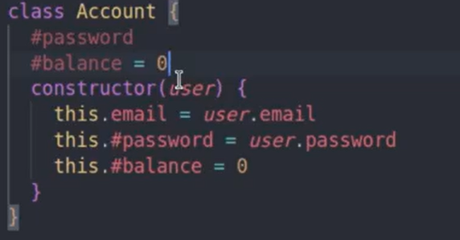
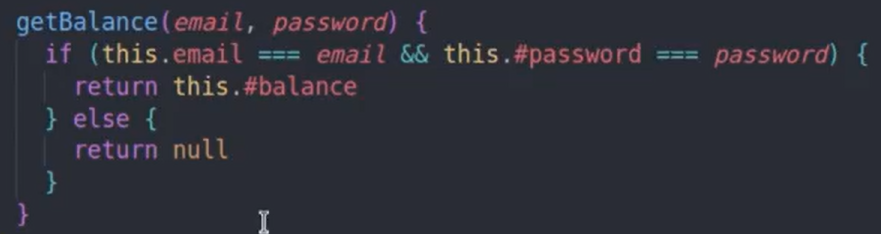
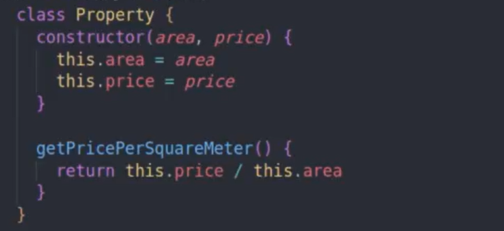
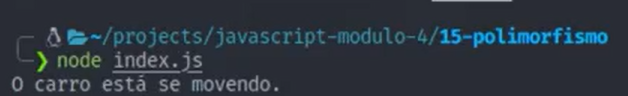
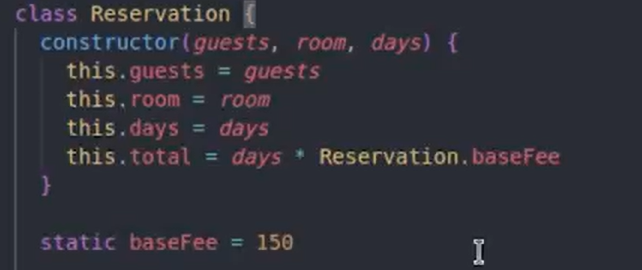

Objetos
Criando Objetos
Para criar um objeto é muito simples , é quase como se fossemos criar uma variável, mas usamos as chaves, então se eu quisesse criar um objeto chamado carro, ficaria assim:
const carro = {}
É comum usarmos const ao invés de let ou var, dentro das chaves poderiamos passar as propriedades que são variáveis que vão armazenar valores, passamos a propriedade depois dois ponto e o valor a ser armazenado, podemos armazenar, número, strings, valores boleanos, array e outro objeto também.
Para referir uma propriedade de um objeto basta chamar o objeto depois colocar um ponto e então o nome da propriedade, se eu tenho um objeto chamado carro e tenho uma propriedade marca, para chamar eu faria da seguinte forma... carro.marca
Para se referir a um objeto dentro dele mesmo usamos a palavra reservada this, então para referir a uma propriedade chamada nome dentro do objeto, podemos usar o seguinte comando this.nome
Métodos
Métodos são funções dentro de um objeto, vou deixar abaixo um exemplo de método.

O addOnStock é um método, que soma o valor passado ao stock já registrado.
Podemos adicionar funções dinamicamente assim:

Função Construtoras
São funções que servem para criar objetos, devem ser escritas em PascalCase, ou seja, com a primeira letra maiúscula e a outra palavra maiúscula também.
Exemplo de Função contrutora..
Para chamar basta acrescentar a palavra new antes de chamar a função normalmente.

Classes e Instância
Uma classe nada mais é do que uma função construtora, ou seja, usada para criar objetos. Para criar uma classe usamos a palavra reservada class damos um nome e dentro da class usamos o método contructor para dizer os atributos que temos que usar nas instâncias. o this no caso das class é usado para refenciar as instacias e não as classes.

Uma instância é como chamados uma class, nesse exemplo o eragon é uma instância da classe Book.
Para criar métodos com as class é bem simples, basta inserir uma função dentro da class e fora do constructor.
Para chamar, é quase como uma função normal, mas passando o instancia e não a class.
Temos o método instanceof que serve para saber se aquele objeto é uma instacia daquela class.

E temos o retorno em valor booleano.
Associação entre Classes
Para associoar uma class a outra é muito simples, vou deixar um exemplo bem fácil de seguir.
Primeiro, criamos a class Person.
Depois criamos a class Adress.

Exportamos as duas classes para um arquivo index, assim podemos associar uma class na outra.

Outra maneira de fazer Associação
Outra maneira de associar seria passar a class Adress diratamente na class Person.

E para chamar a class Person teriamos que chamar já passando os parametros do adress também.

A diferença seria que a classe Person não funcionaria sem a class Adress.
Encapsulamento
Temos dois tipos de encapsulamento, o public que é o padrão e o privado, o privado não pode ser acessado fora da classe, isso é útil quando queremos que aquele valor ou um método não seja alterado por nenhum desenvolvedor.
Tudo o que precisamos fazer é usar um # no começo do nome do atributo. Devemos declarar quais atributos vão ser privado, podemos fazer isso declarando antes do constructor, como na imagem abaixo.

E quando for referenciar, devemos fazer com o #. Cuidado ao tentar chamar o atributo sem passar a # fora da classe, que nesse caso você não estaria chamando esse atributo, mas sim criando um novo.

Abstrair no caso das classes significa tirar, ocutar. Podemos fazer isso para que o código fique mais simples e a outra parte não seja alterada. No exemplo abaixo vamos privar um método que faz a autentificação de email e senha, e retorna um valor booleano.
Agora vamos acrescentar esse método privado em outro método, que irá retorna dependendo do que o nosso método privado retornar.

Se tentarmos chamar o método privado, vai aparecer uma mensagem de erro dizendo que não é possível acessar fora da classe.
Herança
Recurso que permite criar classe que herdam outra classe, a classe herdada chamamos de clase mãe ou superclass já a classe que herda chamamos de classe filha ou subclass. Uma classe flha possui todos os atributos e métodos da classe mãe, mas pode ter seus próprios atributos e métodos.
Agora vamos ver um exemplo de como isso tudo funciona, temos uma class que será a class mãe chamada de property, que tem uma area e um preço como atributos e um método para calcular a area pelo preço.

Para outra classe herdar a class property basta usar a palavra extends e referenciar a class mãe, assim estamos falando que a classe house é uma extensão da class property.

Para instanciar podemos chamar em uma variável como antes e passar os atributos, neste exemplo criamos uma instancia com a clss mãe e outra com a class filha.
Podemos usar o instanceof para saber se uma class é filha de outra.
Para criar uma class que agora herda atributos e métodos da class mãe, mas tenha também seus próprios métodos e atributos. Para isso temos que chamar o construtor da class mãe com a palavra reservada super, passar os parametros que temos na outra class e depois sim passar nosso construtor.
E quando formos instaciar essa class, vamos ver temos que passar os dois atributos herdados e o atributo exclusivo dela.
Lembrando que podemos usar os métodos que estão na class que ela herdou, como nesse exemplo a classe property.
Polimorfismo
O objetivo do polimorfismo é sobrescrever um método da classe mãe, ele ainda assume o mesmo nome.
Como exemplo temos a classe vehicle e seu método move.
Depois temos a classe car que né uma classe filha de vehicle, e sobrescreveu o método move.
Chamamos a instancia com o método.
E temos como resultado no terminal.

Ou seja, ele nãso executou o método do classe mãe, mas sobrescreveu.
Acessadores: Get e Set
Podemos utlizar para proteger os atributos privados ou usa-los para modificar o comportamento de atribuição e leitura. A diferença para os métodos tradicionais é que conseguimos manipula-los como se fosse um atributo.
Get
Utilizado muito para leitura de uma atributo privado, como:
Para utilizar basta usar a palavra reservada get dar um espaço e agir como se fosse um método. Nesse exemplo atribuimos um valor fixo para o amount, então chamamos ele com o get para que ele possa ser lido.
E podemos chamar, sem passar os parenteses como nos métodos, assim como no exemplo:
Set
Para usarmos o set precisamos usar a palavra reservada set dar um espaço nomear então passar um atributo que nesse caso é o mome que quermos atribuir ao this.#username, lembrando que usamos o #username que além dele ser um atributo privado, se não fizessemos isso, o set entraria num loop infinito até dar erro.
Podemos usar o método get logo depois do set, é um comportamento sempre usado.
E para atribuir um valor e chama-lo podemos fazer somente usando pontos sem parenteses, da seguinte forma.
Podemos também fazer uma vadição para saber se o valor a ser inserido é uma string ou não, como vemos no exemplo abaixo.
Atributos e Métodos Estáticos
São tributos que não dependem de uma instacia para serem chamados, podem ser chamados diretamente pelas classes.
Aplicação: Um valor global que queremos que seja usado em todas as instancias eo seu valor seja o mesmo para todas as instancias. Outra aplicação seria uma classe de modelo para uma tabela em banco de dados onde um método seja carregado mesmo que nenhuma instancia tenha sido carregada ainda.
Para usar basta colocar a palavra reservada static e aquele atributo se torna estatico, nesse exemplo o atributo estatico é a taxa de diária de um hotel. Para chamar não usamos mais a palavra this. mas sim o nome da classe ponto e o nosso atributo estatico.

Podemos também usar métodos estaticos, basta colocar a palavra static antes do método.
Para usar basta instanciar uma classe normalmente.
Aqui vemos que nos retorna, ele retornou o calculando o baseFee.
Podemos também usar o get junto com o static, assim podemos deixar o get para atribuiro um novo valor para nosso atributo estatico.